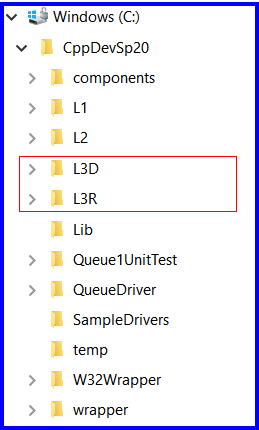
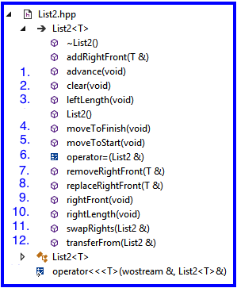

Layering a Component
0. Reference material
1. Setup
1.1 Get the L3Starter Download
- Download L3Starter.zip to your machine - to be used on a subsequent steps
|
|
1.2 Copy List2.hpp from the L3Starter.zip
- Inside L3Starter.zip is a file named List2.hpp
- For this assignment you will be making changes to this file
- Copy this file to the following folder on your machine CppDevSp20\components\include\List
1.3 Copy Folders from the L3Starter.zip
- Inside L3Starter.zip are two folders named L3D and L3R
- Copy both folders to your CppDevSp20 folder as shown in the screen shot to the right
- From VS2019 you can click File Once you copy these folders you can use Visual Studio to open these projects by double clicking on L3D.sln (for the L3D project) and L3R.sln (for the L3R project)
1.4 About Project L3D and L3R
- Each contain a Visual Studio 2019 unit test project
- Both projects can be opened with VS2019 by double clicking on the file L3D.sln (inside L3D folder) or the file L3R.sln (inside the L3R folder)
- Both projects will build correctly if you have followed the instructions in 1.1 - 1.3 (above)
- L3D
- is to be used only in Debug mode - that's what the 'D' of L3D stands for
- L3D.cpp contains unit tests for List2.hpp
- L3D.cpp's unit tests test a List variable using the List's internal representation, not it's abstract value
- L3R
- is to be used only in Release mode - that's what the 'R' of L3R stands for
- L3R.cpp also contains unit tests for List2.hpp
- L3R.cpp's unit tests test a List variable using the List's abstract value, not it's internal representation
|
 |
2. L3 Statement of Work
2.1 Primary Objectives
The primary objective of this lab is to provide you experience working with:
- Layering a component (e.g., List) on another already existing component (e.g., Queue).
2.2 Specifics
Steps:
- Start Visual Studio
- Open project L3D
- Find and open List2.hpp
- Implement a member function - think strategically, some need to be done before others in order to for a unit test's "Test set up" part to work correctly
Hints:
- addRightFront() has been done for you - study the code in that operation to help you understand the correspondence
- Reread the Component Layering slides from Week #4 on the CSSE373 Moodle site
- Reference the Queue and List specifications
- Implement all of List2's stubbed out member functions based on the instructional materials
- Look for the TODO comments in List2.hpp
Important Restrictions:
- Obey the correspondence - When implementing the member functions you must obey the correspondence internal contract
That means:
- assume that the correspondence holds when the member function is called
- guarantee that the correspondence holds when the member function exits
- Use Design by Contract - No defensive programming of List's operations (see design-by-contract example below)
- What this means is that the implementation of a List operation must not contain code that checks to make sure that the List operation was called correctly by the client
- Therefore, for all List operations that have a requires clause, you must program them with the assumption that their requires clause holds at the time the operation is called (like replaceRightFront, see Part 3 below)
- No Cross Calling - None of List's member functions are permitted to make calls to any of the other public List member functions, i.e., no cross calling
- For example, under this rule it is illegal for the swapRights operation to call any other List operation, e.g., addRightFront
- All List operations (e.g., swapRights) should directly manipulate List's data members (i.e., leftQ and rightQ) in order to satisfy the operation's ensures clause
- Calling Down - create private member functions that capture code that starts to appear in multiple different places in your List2 implementation and then instead of duplicating this code (i.e., having it appear in multiple different member function implementations) make a call down to the private member function from the public member function - this engineering technique is called procedural abstraction and the call is call calling down - for this assignment a private operation that can move items from one queue to second queue will come in real handy
- No Recursion - None of List's member functions are permitted to be recursive
- About Making Copies -
- Copying the data members leftQ or rightQ - When implementing List2's operator = you must use Queue's operator = to make a copy of leftQ and rightQ. Do not call operator = to make a copy of leftQ or rightQ in any implementation of the other List2 member functions - this is a performance constraint. If when implementing any other List operations you think you need to call operator = to make a copy of leftQ or rightQ, then rethink your algorithm until you figure out a way to not make a copy. Use transferFrom.
- Copying variables of type T - There is no need to make copies of the items being added or removed to the list. These are all items of type T. If you need to move items of type T from one variable to another, then call the transferFrom operation to do it.
Design by Contract - Example
List2 implementation of replaceRightFront
Implemented Using Design by Contract
Use This Engineering Technique |
List2 implementation of replaceRightFront
Implementation Fails to Use Design by Contract
Also Known As: Defensive Programming
DO NOT USE THIS APPROACH |
template <class T>
void List2<T>::replaceRightFront(T& x)
//! restores self
//! requires: self.right /= <>
//! ensures: <rightFront> is prefix of self.right
{
// assumes client has met the requires clause
// assumes the corresponence holds
rightQ.replaceFront(x);
// guarantees the correspondence still holds because nothing was done leftQ or rightQ
} // replaceRightFront |
template <class T>
void List2<T>::replaceRightFront(T& x)
//! restores self
//! requires: self.right /= <>
//! ensures: <rightFront> is prefix of self.right
{
// fails to assume client has met the requires clause
if (rightQ.length() > 0) {
rightQ.replaceFront(x);
} // end if
} // replaceRightFront |
3. Testing
- L3D testing first
- These test against the List's internal representation, so these unit tests will only work with this particular implementation
- Look at these unit tests to better understand the correespondence between a List's abstract value and its internal representation
- L3R tesing second
- These test at the abstract level only and would work for any List implementation
- Unfortunately the unit tests in L3D and L3R do not thoroughly test the List2.hpp member functions
- If you want to earn full credit for this assignment you must add more unit tests, particularly to L3D.cpp
Use Boundary Condition Testing:
- Add/Remove/Access at the front, middle, and at the end of a List
- There are four addRightFront's unit tests - use these 4 different tests as a guide for boundary condition testing the other member functions:
- adds an item to: (<>,<>) - incoming List is empty
- adds an item to: (<>,<21>) - incoming List has empty left and non-empty right
- adds an item to: (<13,17,19>,<29>) - incoming List has non-empty left and non-empty right
- adds an item to: (<13,17,19>,<>) - incoming List has non-empty left and empty right
- Notice that in both #2 and #4, there is only one item in the List's right prior to the call to addRight Front. If I were to add additional tests for addRightFront, I would vary #2 and #3 above by having more items in the List's right before the call to addRightFront.
My test cases:
When grading I will be running my own more complete set of unit tests that will systematically stress your member function implementations
4. Grading Guidelines
Failure of Your Submission to Correctly Compile - 100 out of 100 points
- If your submission does not compile correctly so that I cannot run my test cases, zero points will be earned
Violation of "Important Restrictions" (see above) - 40 points maximum
- 8 points each up to 40 points
Unused Variables/Code - 10 points maximum
For unused variables and code remaining anywhere in List2.hpp
- 1st offense 0 points off
- 2nd offense 6 points off
- 3rd offense 4 points off
- 4th offense, etc., no more points off
Operation Implementations - 60 points maximum
6 points off for each incorrect operation listed in the check list below that does not meet its ensures clause, not to exceed 60 points

5. Submitting the Lab for Grading
Upload L3's completed List2.hpp file to the L3 Moodle assignment